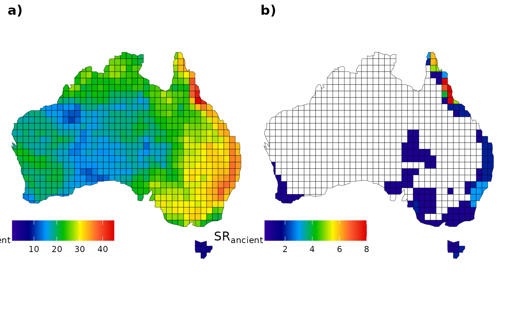

Passerines Diversification
Source:vignettes/Passeriformes-diversification.Rmd
Passeriformes-diversification.RmdThis article aims to replicate the case study developed by Araujo et al. (in review). We will also present the workflow executed within the study for both a single passerine phylogeny and multiple passerine phylogenies, in order to control the results for phylogenetic uncertainty Rangel et al. (2015).
Before starting our analysis, we’ll need to load the
ape, ggplot2, ggpubr, and
sf packages. Additionally, if required, install the
devtools to invoke the treesliceR package:
Now, we’ll need to load (and install if necessary) the
treesliceR package:
# Loading it
library(treesliceR)1. Passerines study for a single phylogeny
1.1. First framework example
Herein, we’ll compare the distribution of passerine species richness between ancient and recent lineages. Additionally, we’ll map the distribution of their respective ancient and recent endemic species (i.e., regions of paleo- and neo-endemism). The passerine phylogenies we used are subsets of the global bird phylogenies provided by Jetz et al. (2012).
First, we load the passerine phylogeny available within the package
by calling the pass_trees object:
tree <- pass_trees[[1]]Now, we need to split the phylogeny into two distinct portions: one representing ancient lineages and another representing those originating from recent cladogenesis events. To do this, we categorically defined ancient species as those with tips ages beyond the 75th percentile, while more derived were categorized as those located within the 25th percentile.
We can prune the tips outside the defined thresholds from our
phylogeny using the prune_tips() function, setting the
argument qtl = TRUE to prune the tips based on quantile
values:
ancient <- prune_tips(tree, 0.75, qtl = TRUE)
recent <- prune_tips(tree, 0.25, qtl = TRUE, method = 2)The method = 2 setting makes the function prune the tips
older than the specified temporal threshold. For more details, see the
argument descriptions by tipping ?prune_tips.
Let’s compare our original phylogeny with the pruned ones:
oldpar <- par(mfrow = c(1, 3)) # Setting an 1x3 graphical display
plot(tree, main = "Complete tree", show.tip.label = F); axisPhylo()
plot(ancient, main = "Ancient tree", show.tip.label = F); axisPhylo()
plot(recent, main = "Recent tree", show.tip.label = F); axisPhylo()
par(oldpar) # Returning to the original displayNext, we need to obtain the species presence-absence matrix separately for each phylogeny. Let’s start with the ancient phylogeny:
Now we’ll create another presence-absence matrix with the passerine endemics, based on a quantile threshold of the 30th percentile of the ancient species’ range size:
The same needs to be computed for recent species. We will subset their presence-absence matrix for all recent species and another for their endemics using the same criteria:
# All recent
rec_mat <- pass_mat[, which(colnames(pass_mat) %in% recent$tip.label)]
# Endemics
rec_end_mat <- rec_mat[which(colSums(rec_mat) <= quantile(colSums(rec_mat), 0.30))]Finally, we’ll add all the species richness information to the grid
assemblages (AU_grid object):
AU_grid <- cbind(AU_grid,
SR_anc = rowSums(anc_mat), SR_end_anc = rowSums(anc_end_mat), # Ancient
SR_rec = rowSums(rec_mat), SR_end_rec = rowSums(rec_end_mat)) # RecentNow, we can create a graph similar to the one displayed in Araujo et
al. (in review) using the ggplot2 package. Let’s start with
the ancient species:
# Before plotting, let's set a cool palette:
pal <- colorRampPalette(c("#30009B", "#000083", "#009BFE", "#00BC00", "#FEF600", "#FE6230", "#DD0000" ))
# All species
fig_a <- ggplot() +
geom_sf(data = AU_grid, aes(fill = SR_anc)) +
scale_fill_gradientn(colours = pal(100),
limits = c(0.5, max(AU_grid$SR_anc)),
na.value="white") +
labs(fill = expression(SR["ancient"])) +
theme_void() +
labs(x = NULL, y = NULL) +
theme(legend.position = c(.15, .14),
legend.title = element_text(size = 13),
legend.key.size = unit(0.75, "cm"),
legend.direction = "horizontal")
# Only endemics
fig_b <- ggplot() +
geom_sf(data = AU_grid, aes(fill = SR_end_anc)) +
scale_fill_gradientn(colours = pal(100),
limits = c(0.5, max(AU_grid$SR_end_anc)),
na.value="white") +
labs(fill = expression(SR["ancient"])) +
theme_void() +
labs(x = NULL, y = NULL) +
theme(legend.position = c(.15, .14),
legend.title = element_text(size = 13),
legend.key.size = unit(0.75, "cm"),
legend.direction = "horizontal")
# To plot them together
ggarrange(fig_a, fig_b,
labels = c("a)", "b)"), ncol = 2, nrow = 1)
and for those recent species:
# All species
fig_c <- ggplot() +
geom_sf(data = AU_grid, aes(fill = SR_rec)) +
scale_fill_gradientn(colours = pal(100),
limits = c(1, max(AU_grid$SR_rec)),
na.value="white") +
labs(fill = expression(SR["recent"])) +
theme_void() +
labs(x = NULL, y = NULL) +
theme(legend.position = c(.15, .14),
legend.title = element_text(size = 13),
legend.key.size = unit(0.75, "cm"),
legend.direction = "horizontal")
# Only endemics
fig_d <- ggplot() +
geom_sf(data = AU_grid, aes(fill = SR_end_rec)) +
scale_fill_gradientn(colours = pal(100),
limits = c(1, max(AU_grid$SR_end_rec)),
na.value="white") +
labs(fill = expression(SR["recent"])) +
theme_void() +
labs(x = NULL, y = NULL) +
theme(legend.position = c(.15, .14),
legend.title = element_text(size = 13),
legend.key.size = unit(0.75, "cm"),
legend.direction = "horizontal")
# To plot them together
ggarrange(fig_c, fig_d,
labels = c("c)", "d)"), ncol = 2, nrow = 1)Note that the final output may differ slightly from what was observed in Araujo et al. (in review). However, it’s important to remember that here we conducted the analysis using only a single passerine phylogeny. A more comprehensive assessment using all phylogenies could be conducted in subsequent sections below (for example in the section “2. Passerines study for multiple phylogenies”).
1.2. Second framework example
Herein, we’ll calculate the CpB-rate of Australian passerines for
both turnover and nestedness components. Firstly,
we’ll need to load the assemblages containing the species matrix stored
within the package by calling the internal object pass_mat.
Additionally, to calculate the beta-diversity metrics, it is necessary
to provide the adjacency matrix containing the focal cells and their
respective neighborhoods, which can be accessed through the
AU_adj object. Let’s examine the header of the assemblage
matrix containing the species, focusing on the first four columns (or
species):
head(pass_mat[, 1:4])
#> Heteromyias_albispecularis Myzomela_obscura Taeniopygia_guttata
#> 1 0 1 0
#> 2 0 1 0
#> 3 0 1 0
#> 4 0 1 0
#> 5 0 1 0
#> 6 0 1 0
#> Dicaeum_hirundinaceum
#> 1 1
#> 2 1
#> 3 1
#> 4 1
#> 5 1
#> 6 1We can run some sensitivity analysis to find the most parsimonious number of slices to assess the CpB-rate patterns. But first, we need to create a vector containing our desired number of slices for assessment:
vec <- c(250, 500, 750, 1000, 1250, 1500, 1750, 2000)Let’s run the sensitivity analysis for both turnover and nestedness components:
sens_turn <- CpR_sensitivity(tree = tree, vec = vec, samp = 100,
mat = pass_mat, adj = AU_adj, rate = "CpB", comp = "turnover")
sens_nest <- CpR_sensitivity(tree = tree, vec = vec, samp = 100,
mat = pass_mat, adj = AU_adj, rate = "CpB", comp = "nestedness")So, we can visualize our sensitivity analysis using the
CpR_sensitivity_plot function. We use the
ggplot2 syntax to add a vertical line showing our selected
number of slices to run our subsequent analysis:
# Store each graph within a respective object
turn_sens_plot <- CpR_sensitivity_plot(sens_turn, rate = "CpB", stc = "mean") +
geom_vline(xintercept = 1000, linetype="dashed", color = "black")
nest_sens_plot <- CpR_sensitivity_plot(sens_nest, rate = "CpB", stc = "mean") +
geom_vline(xintercept = 1000, linetype="dashed", color = "black")
# To plot them together
ggarrange(turn_sens_plot, nest_sens_plot,
labels = c("a)", "b)"), ncol = 2, nrow = 1)Now, we can finally calculate the CpB-rates for turnover and nestedness components, in this case, under a multisite approach (PS: this may take a few minutes):
# For turnover component
turn <- CpB(tree = tree, n = 1000, mat = pass_mat, adj = AU_adj, comp = "turnover")
# For nestedness component
nest <- CpB(tree = tree, n = 1000, mat = pass_mat, adj = AU_adj, comp = "nestedness")Finally, we can plot these CpB over time and map them. To map them,
we’ll use an Australian grid map stored within our package in the object
AU_grid. Let’s plot these patterns for the turnover
component:
turn_1 <- CpR_graph(data = turn, rate = "CpB", qtl = TRUE)
turn_2 <- CpR_graph(data = turn, rate = "CpB", qtl = TRUE, map = AU_grid)
# To plot them together
ggarrange(turn_1, turn_2,
labels = c("a)", "b)"), ncol = 2, nrow = 1)
And we can do the same for the nestedness component:
2. Passerines study for multiple phylogenies
2.1. First framework example
Herein, we’ll replicate the process from the previous section using multiple (100) phylogenies. We’ll utilize all these phylogenies to account for phylogenetic uncertainty associated with the inputted tips.
Let’s start by creating empty data.frames to store the
species richness for each category (i.e., ancient vs. recent, all
species vs. endemics):
# Data frames for ancient lineages:
mat_anc_rich <- as.data.frame(matrix(nrow = nrow(AU_grid), ncol = 100))
mat_anc_endemics <- as.data.frame(matrix(nrow = nrow(AU_grid), ncol = 100))
# Data frames for recent ones:
mat_rec_rich <- as.data.frame(matrix(nrow = nrow(AU_grid), ncol = 100))
mat_rec_endemics <- as.data.frame(matrix(nrow = nrow(AU_grid), ncol = 100))Then, we can automate the procedures executed in the first section
for all our 100 phylogenies by simply using a for() loop to
iterate over each phylogeny:
# Create a for loop that iterate along all trees
for (i in 1:100) {
# Select phylogeny "i" available within the package:
tree <- pass_trees[[i]]
# Prune the "i" phylogeny based on quantiles:
ancient <- prune_tips(tree, 0.75, qtl = T)
recent <- prune_tips(tree, 0.25, qtl = T, method = 2)
# Capture the presence-absence matrix for ancient species:
anc_mat <- pass_mat[, which(colnames(pass_mat) %in% ancient$tip.label)]
mat_anc_rich[, i] <- rowSums(anc_mat) # Save their species richness
# Capture ancient endemic richness in Australia:
anc_mat <- anc_mat[which(colSums(anc_mat) <= quantile(colSums(anc_mat), 0.30))]
mat_anc_endemics[, i] <- rowSums(anc_mat) # Save their species richness
# Capturing the presence-absence matrix for recent species:
rec_mat <- pass_mat[, which(colnames(pass_mat) %in% recent$tip.label)]
mat_rec_rich[, i] <- rowSums(rec_mat) # Save their species richness
# Capturing recent endemic richness in Australia:
rec_mat <- rec_mat[which(colSums(rec_mat) <= quantile(colSums(rec_mat), 0.30))]
mat_rec_endemics[, i] <- rowSums(rec_mat) # Save their species richness
}Similarly as before, we can assign the mean species richness values
of each category to our AU_grid assemblages:
# Assigning ancient species richness
AU_grid$SR_anc <- rowMeans(mat_anc_rich)
AU_grid$SR_end_anc <- rowMeans(mat_anc_endemics)
# Assigning recent species richness
AU_grid$SR_rec <- rowMeans(mat_rec_rich)
AU_grid$SR_end_rec <- rowMeans(mat_rec_endemics)Let’s plot it!
# All ancient species
fig_a <- ggplot() +
geom_sf(data = AU_grid, aes(fill = SR_anc)) +
scale_fill_gradientn(colours = pal(100),
limits = c(0.5, max(AU_grid$SR_anc)),
na.value="white") +
labs(fill = expression(SR["ancient"])) +
theme_void() +
labs(x = NULL, y = NULL) +
theme(legend.position = c(.15, .14),
legend.title = element_text(size = 13),
legend.key.size = unit(0.75, "cm"),
legend.direction = "horizontal")
# Only ancient endemics
fig_b <- ggplot() +
geom_sf(data = AU_grid, aes(fill = SR_end_anc)) +
scale_fill_gradientn(colours = pal(100),
limits = c(0.5, max(AU_grid$SR_end_anc)),
na.value="white") +
labs(fill = expression(SR["ancient"])) +
theme_void() +
labs(x = NULL, y = NULL) +
theme(legend.position = c(.15, .14),
legend.title = element_text(size = 13),
legend.key.size = unit(0.75, "cm"),
legend.direction = "horizontal")
# All recent species
fig_c <- ggplot() +
geom_sf(data = AU_grid, aes(fill = SR_rec)) +
scale_fill_gradientn(colours = pal(100),
limits = c(0.5, max(AU_grid$SR_rec)),
na.value="white") +
labs(fill = expression(SR["recent"])) +
theme_void() +
labs(x = NULL, y = NULL) +
theme(legend.position = c(.15, .14),
legend.title = element_text(size = 13),
legend.key.size = unit(0.75, "cm"),
legend.direction = "horizontal")
# Only recent endemics
fig_d <- ggplot() +
geom_sf(data = AU_grid, aes(fill = SR_end_rec)) +
scale_fill_gradientn(colours = pal(100),
limits = c(0.5, max(AU_grid$SR_end_rec)),
na.value="white") +
labs(fill = expression(SR["recent"])) +
theme_void() +
labs(x = NULL, y = NULL) +
theme(legend.position = c(.15, .14),
legend.title = element_text(size = 13),
legend.key.size = unit(0.75, "cm"),
legend.direction = "horizontal")
# To plot them together
ggarrange(fig_a, fig_b, fig_c, fig_d,
labels = c("a)", "b)", "c)", "d)"),
ncol = 2, nrow = 2)2.2. Second framework example
Once we have already decided on the number of slices in the previous sections (in section “1.2.”), we’ll skip the sensitivity analysis step to calculate the CpB-rates. Thus, here we’ll calculate the CpB-rate for the 100 phylogenies using our previously defined criterion of 1000 slices.
First, we’ll run the CpB-rate analysis for the
turnover component. To obtain our CpB-rates faster for
our 100 phylogenies, pay attention that we set the CpB()
function to run under parallel programming (using the argument
ncor). Before run it, you must confirm if
the number of cores set (5) is supported by your machine. Anyway, the
following function can may take some minutes to finish, but it can run
faster if you are able to set a higher number of cores:
CpB_turn <- lapply(pass_trees, function(x){
return(CpB(tree = x, n = 1000, mat = pass_mat, adj = AU_adj, comp = "turnover", ncor = 5))
})Now, we capture can capture the mean of each parameter outputted in
on our list of CpB() outputs using the
sapply() function. We’ll store them within a new data frame
containing the format that our CpR_graph() is able to read
(which is the same as the CpB() output):
CpB_val <- sapply(CpB_turn, function(x){return(x[,1])})
pB_val <- sapply(CpB_turn, function(x){return(x[,2])})
pBO_val <- sapply(CpB_turn, function(x){return(x[,3])})
# Creating the new data frame
turn_100trees <- data.frame(CpB = apply(CpB_val, 1, mean),
pB = apply(pB_val, 1, mean),
pBO = apply(pBO_val, 1, mean))Plotting the CpB outputs for the turnover component:
turn_1 <- CpR_graph(data = turn_100trees, rate = "CpB", qtl = TRUE)
turn_2 <- CpR_graph(data = turn_100trees, rate = "CpB", qtl = TRUE, map = AU_grid)
# To plot them together
ggarrange(turn_1, turn_2,
labels = c("a)", "b)"), ncol = 2, nrow = 1)Now, we’ll do the same for the nestedness component:
CpB_nest <- lapply(pass_trees, function(x){
return(CpB(tree = x, n = 1000, mat = pass_mat, adj = AU_adj, comp = "nestedness", ncor = 5))
})Separating and summarizing each parameter:
CpB_val <- sapply(CpB_nest, function(x){return(x[,1])})
pB_val <- sapply(CpB_nest, function(x){return(x[,2])})
pBO_val <- sapply(CpB_nest, function(x){return(x[,3])})
# DF
nest_100trees <- data.frame(CpB = apply(CpB_val, 1, mean),
pB = apply(pB_val, 1, mean),
pBO = apply(pBO_val, 1, mean))Plotting the CpB outputs for the nestedness component:
nest_1 <- CpR_graph(data = nest_100trees, rate = "CpB", qtl = TRUE)
nest_2 <- CpR_graph(data = nest_100trees, rate = "CpB", qtl = TRUE, map = AU_grid)
# To plot them together
ggarrange(nest_1, nest_2,
labels = c("a)", "b)"), ncol = 2, nrow = 1)
That’s all folks!
References
Jetz, W., Thomas, G. H., Joy, J. B., Hartmann, K. and Mooers, A. O. 2012. The global diversity of birds in space and time. - Nature 491(7424): 444–448. https://doi.org/10.1038/nature11631
Rangel, T. F., Colwell, R. K., Graves, G. R., Fučíková, K., Rahbek, C. and Diniz-Filho, J. A. F. 2015. Phylogenetic uncertainty revisited: Implications for ecological analyses. - Evolution 69(5): 1301–1312. https://doi.org/10.1111/evo.12644